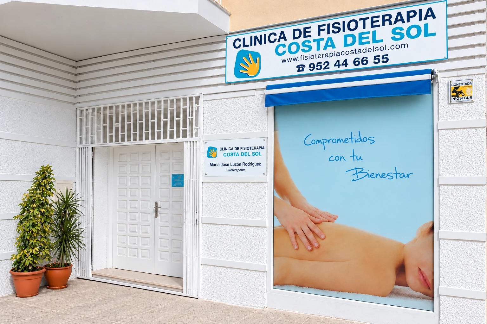
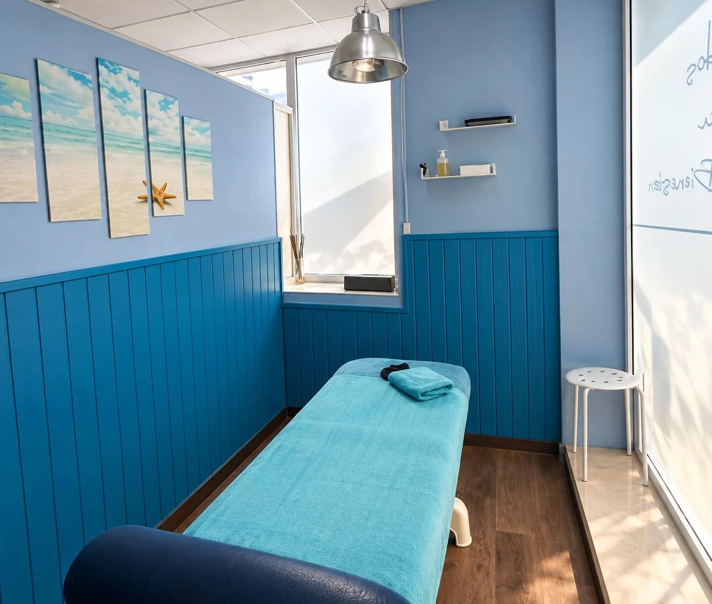

Física
Fisioterapia general
Tratamiento de dolor, movilidad y fortalecimiento para devolver la calidad de vida a pacientes con lesiones o limitaciones funcionales.
Fisioterapia en Benalmádena
Ubicados en plena Costa del Sol, llevamos dedicados a la Fisioterapia desde el año 1995, siendo nuestro único objetivo preservar, restablecer y aumentar el nivel de salud de los ciudadanos a fin de mejorar la calidad de vida de la persona y de la comunidad.
En nuestro centro encontrará una conjunción entre profesionalidad y trato personalizado, pues siempre será atendido por fisioterapeutas diplomados universitarios y colegiados que prestan una extrema atención al paciente con un tratamiento individualizado, proporcionando en todo momento una estancia confortable y de gran calidad asistencial:
El mejor centro para la mejor rehabilitación
Nuestro afán es ofrecer la máxima calidad asistencial desde el primer contacto con el paciente, realizando un examen exhaustivo además de valorar pruebas físicas y funcionales que nos permitan realizar un diagnóstico fisioterápico objetivo, así como un posterior seguimiento de la evolución del paciente, siempre teniendo en cuenta el diagnóstico y la prescripción médica establecida.
En todo el proceso de recuperación mantenemos al paciente informado sobre su evolución y las posibilidades terapeúticas para la recuperación de su lesión, invitándole a participar activamente en el proceso de su recuperación , en un ambiente muy agradable, distendido y relajado, donde se respeta en todo momento el derecho a la intimidad, con un trato humano que asegura que nuestros pacientes se sientan a gusto y en confianza.
Un espacio pensado para tu recuperación.
Nuestra clínica combina tecnología, comodidad y trato cercano para que cada sesión se desarrolle en un entorno seguro y eficaz.





Sección pendiente de desarrollar
Recuperación integral, adaptada a cada persona.
Abordamos la rehabilitación desde una perspectiva individual, con protocolos claros y acompañamiento continuo durante cada fase del tratamiento.
Tratamiento de dolor, movilidad y fortalecimiento para devolver la calidad de vida a pacientes con lesiones o limitaciones funcionales.
Plan de recuperación para lesiones en deporte y entrenamiento, con enfoque en retorno seguro y control progresivo de la actividad.
Atención para esguinces, contracturas, golpes, fracturas y secuelas postraumáticas, con seguimiento y prevención del dolor.
Sección pendiente de desarrollar
Trabajamos con entidades y aseguradoras.
Asesoramos sobre la vía de atención más adecuada y facilitamos la tramitación para que puedas iniciar tu tratamiento con la máxima comodidad.
Sección pendiente de desarrollar
Tu recuperación después de un accidente, con ayuda y seguimiento.
Si has sufrido un accidente de tráfico, tratamos las secuelas físicas de forma individualizada y coordinamos la documentación necesaria para facilitar la gestión con aseguradoras y profesionales implicados.
Pide tu cita y empieza a sentirte mejor.
Para ver el mapa es necesario aceptar las cookies de Google Maps.
En cumplimiento del artículo 10 de la Ley 34/2002, de 11 de julio, de Servicios de la Sociedad de la Información y de Comercio Electrónico (LSSICE), le informamos de los datos del titular de este sitio web:
Este sitio web tiene una finalidad exclusivamente informativa sobre los servicios de la clínica. No dispone de formularios, registro de usuarios ni ningún otro medio de recogida de datos personales. Si desea contactar con nosotros, puede hacerlo por teléfono o a través de la dirección de correo electrónico indicada.
Los derechos de propiedad intelectual del contenido de este sitio web, su diseño gráfico y sus códigos son titularidad de María José Luzón Rodríguez. Por tanto, queda prohibida su reproducción, distribución, comunicación pública y transformación, salvo para uso personal y privado. Igualmente, todos los nombres comerciales, marcas o signos distintivos de cualquier clase contenidos en este sitio web están protegidos por la ley.
María José Luzón Rodríguez no se responsabiliza del mal uso que se realice de los contenidos de este sitio web, siendo exclusiva responsabilidad de la persona que accede a ellos o los utiliza. María José Luzón Rodríguez no asume responsabilidad alguna por la información contenida en páginas web de terceros a las que se pueda acceder mediante enlaces o buscadores desde este sitio web. La presencia de enlaces en este sitio web tiene una finalidad meramente informativa y en ningún caso supone sugerencia, invitación o recomendación sobre los mismos.
María José Luzón Rodríguez no será responsable de los posibles daños o perjuicios que se pudieran derivar de interferencias, omisiones, interrupciones, virus informáticos, averías o desconexiones en el funcionamiento operativo de este sitio web motivadas por causas ajenas; de retrasos o bloqueos en su uso causados por deficiencias o sobrecargas de las redes de telecomunicaciones, de Internet o de otros sistemas electrónicos; así como de los daños que puedan ser causados por terceras personas mediante intromisiones ilegítimas fuera de su control. Asimismo, María José Luzón Rodríguez queda exonerada de responsabilidad ante cualquier daño o perjuicio que pudiera sufrir el usuario como consecuencia de errores, defectos u omisiones en la información facilitada en este sitio web, siempre que proceda de fuentes ajenas.
La privacidad es de gran importancia para María José Luzón Rodríguez y queremos mantener una actitud abierta y transparente al tratar sus datos personales. A continuación le explicamos cómo se tratan y protegen, en cumplimiento del Reglamento General de Protección de Datos (UE) 2016/679 del Parlamento Europeo y del Consejo, de 27 de abril de 2016, y de la Ley Orgánica 3/2018, de 5 de diciembre, de Protección de Datos Personales y garantía de los derechos digitales.
María José Luzón Rodríguez | NIF: 25708121D | Dirección postal: Avd. Salvador Vicente, Conjunto Parquemiel, 6, Arroyo de la Miel, Benalmádena — 29631 Málaga | Correo electrónico: info@fisioterapiacostadelsol.com
A través de este sitio web no se recoge ningún dato personal. Únicamente tratamos los datos que usted nos facilite directamente al contactar con nosotros por correo electrónico o por teléfono, o al acudir a la clínica.
Tratamos la información que nos facilitan las personas interesadas con el fin de atender sus consultas, gestionar sus citas, prestarle el servicio solicitado y/o contratado, y realizar la gestión administrativa, contable y fiscal del mismo, incluida su facturación. No utilizamos sus datos para enviar publicidad ni comunicaciones comerciales de ningún tipo.
Únicamente deberá facilitar los datos que sean necesarios para atender su consulta o prestarle el servicio solicitado. Si no los facilita, no podremos gestionar su solicitud.
Los datos se conservarán mientras se mantenga la relación comercial y, en su caso, durante los años necesarios para cumplir con las obligaciones legales que resulten de aplicación.
Sus datos no se cederán a terceros, salvo en los casos en que exista una obligación legal (por ejemplo, cuando sean requeridos por las autoridades públicas competentes) o con su autorización expresa. No obstante, para la gestión del correo electrónico utilizamos servicios de Microsoft, que puede acceder a los datos contenidos en los mensajes en su condición de proveedor de dicho servicio.
María José Luzón Rodríguez tratará sus datos de forma confidencial y ha adoptado las medidas de seguridad técnicas y organizativas adecuadas para protegerlos.
Los datos que nos envíe por correo electrónico pueden ser tratados por Microsoft en servidores ubicados fuera del Espacio Económico Europeo, principalmente en Estados Unidos. Estas transferencias se realizan al amparo del Marco de Privacidad de Datos UE-EE. UU., en el que Microsoft está certificada, y de las garantías previstas en el RGPD. No se realizan otras transferencias de datos a terceros países.
Cualquier persona tiene derecho a obtener confirmación sobre si en María José Luzón Rodríguez estamos tratando datos personales que le conciernan, o no.
Las personas interesadas tienen derecho a acceder a sus datos personales, así como a solicitar la rectificación de los datos inexactos o, en su caso, solicitar su supresión cuando, entre otros motivos, los datos ya no sean necesarios para los fines para los que fueron recogidos. También tienen derecho a la portabilidad de sus datos.
En determinadas circunstancias, los interesados podrán solicitar la limitación del tratamiento de sus datos, en cuyo caso únicamente los conservaremos para el ejercicio o la defensa de reclamaciones.
En determinadas circunstancias y por motivos relacionados con su situación particular, los interesados podrán oponerse al tratamiento de sus datos. En este caso, María José Luzón Rodríguez dejará de tratar los datos, salvo por motivos legítimos imperiosos, o el ejercicio o la defensa de posibles reclamaciones.
Podrá ejercer sus derechos mediante escrito dirigido a la dirección postal o a la dirección de correo electrónico del responsable del tratamiento indicadas anteriormente, adjuntando en ambos casos copia de su DNI o documento de identidad. Si actúa a través de un representante, deberá aportar también la acreditación de dicha representación. El uso de firma electrónica le exime de aportar la copia del documento de identidad.
Si ha otorgado su consentimiento para alguna finalidad concreta, tiene derecho a retirarlo en cualquier momento, sin que ello afecte a la licitud del tratamiento basado en el consentimiento previo a su retirada.
En caso de que considere vulnerados sus derechos en lo concerniente a la protección de sus datos personales, especialmente cuando no haya obtenido satisfacción en el ejercicio de sus derechos, puede presentar una reclamación ante la Autoridad de Control en materia de Protección de Datos competente a través de su sitio web: www.aepd.es
Las cookies y otras tecnologías similares, como el almacenamiento local del navegador, permiten a un sitio web guardar pequeños datos en su dispositivo.
Este sitio web no utiliza cookies propias. Únicamente guarda en el almacenamiento local de su navegador dos datos técnicos: su preferencia de tema visual (claro u oscuro) y su elección sobre el aviso de cookies. Estos datos no le identifican, no se envían a ningún servidor y solo sirven para recordar las opciones que usted ha elegido, por lo que están exentos de consentimiento según el artículo 22.2 de la LSSICE. Puede eliminarlos en cualquier momento desde la configuración de su navegador.
Para mostrar la ubicación de la clínica, este sitio web incluye un mapa proporcionado por Google Maps, servicio de Google Ireland Limited. Al cargarse el mapa, Google puede instalar cookies en su dispositivo y tratar datos como su dirección IP con fines propios, sobre los que María José Luzón Rodríguez no tiene control. Estos datos pueden transferirse a Estados Unidos, al amparo del Marco de Privacidad de Datos UE-EE. UU.
Por ello, el mapa solo se carga si usted acepta las cookies, ya sea desde el aviso de cookies que se muestra al acceder a la web o desde el botón disponible en el lugar del mapa. Si no las acepta, Google no recibe ningún dato: el mapa no se mostrará y podrá consultar la ubicación de la clínica en la dirección indicada en este aviso o abrirla directamente en Google Maps mediante el enlace disponible.
Puede obtener más información en la política de privacidad de Google y en su información sobre cookies.
Puede cambiar su elección o retirar su consentimiento en cualquier momento desde el enlace «Configuración de cookies» situado al pie de la página, o eliminando los datos de este sitio web desde la configuración de su navegador. Para eliminar las cookies que Google haya podido instalar, deberá hacerlo desde la configuración de su navegador.